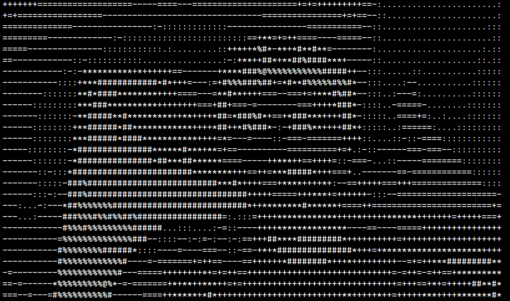

Python Progress
It's been a while since I've written here, but I've been making some real progress with my Python course using LinkedIn Learning! Within the course I learned the basics of Python such as declaring and using variables, writing methods, control flow, and list comprehensions, which are a Python exclusive! Since I am very knowledgeable of another programming language (Java), it wasn't so difficult for me to pick up on Python, and so I got started on my first project fairly quickly: I would like to introduce the ASCII Camera! which is a Python application which converts your computer's internal webcam into an ASCII picture. With this project I learned a lot about organization and structure of code in Python, and more importantly the versatility of packages that Python offers. In this project the main package I utilized was cv2, which is a Python adaptation of OpenCV, to retrieve, downscale, and convert the webcam's recording into ASCII art using a clever trick with the amount of pixels in each ASCII character (for example, "@" is more "dense" than "7"). Python has been a lot of fun to learn, and although there are some hurtles to jump, I am enjoying the challenge andhave been loving the language. Expect more updates on my Python progress in the near future. Oh and heres a picture of the ASCII Camera in use:
